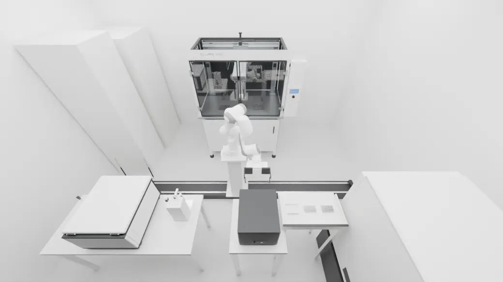
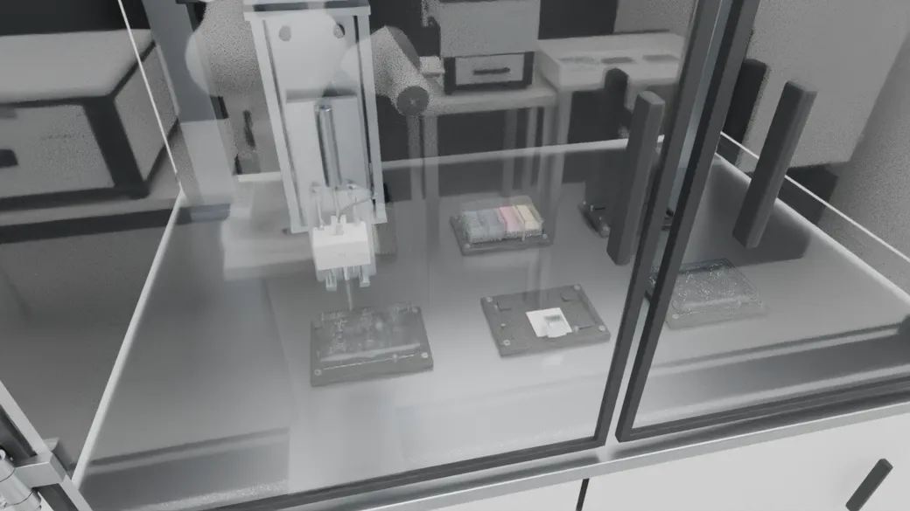
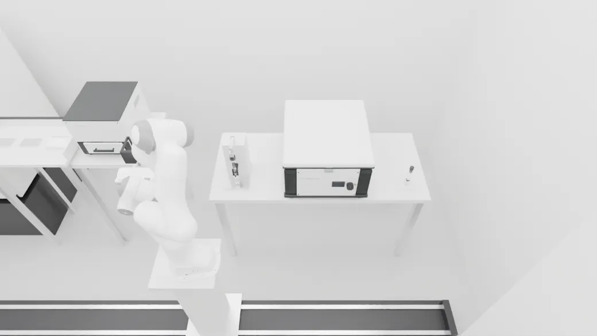
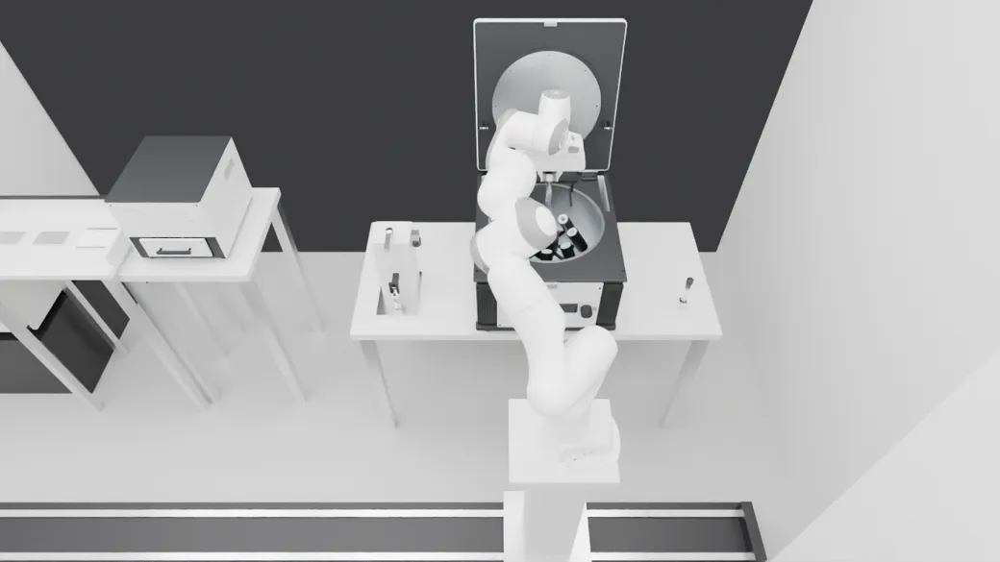
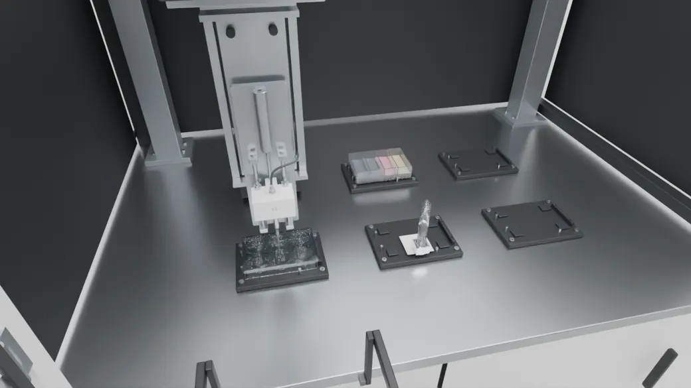
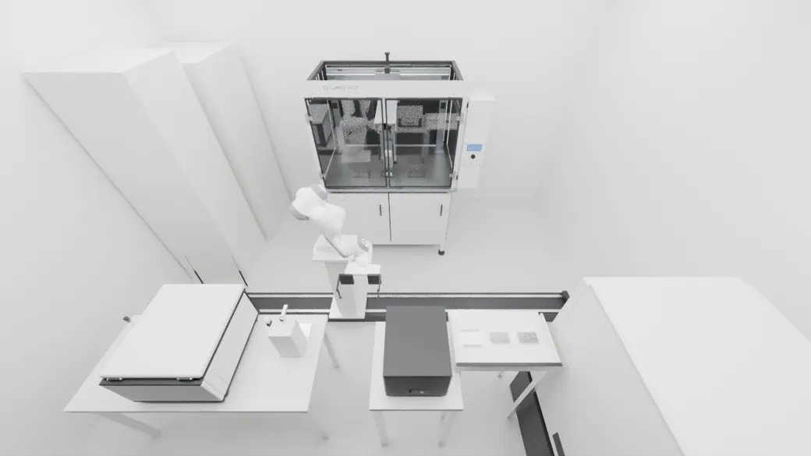
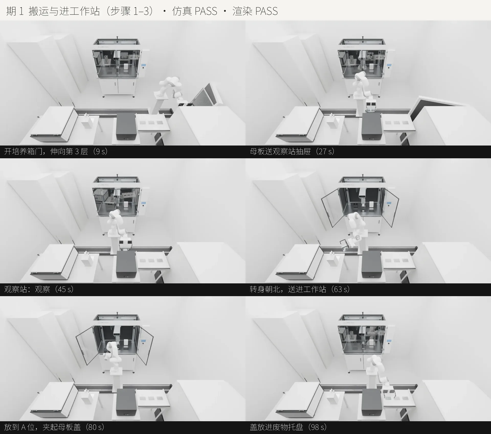

14 步细胞传代黑灯实验室：物理验证是怎么做的
这一期把细胞传代 14 个步骤全部做进一个 MuJoCo 场景，从培养箱取母板，一直做到子板送回培养箱。全程仿真 911.9 s，冻结的 20 项门限全部通过，10 个故意做错的负例全部被抓住。这一页重点讲清楚一件事：我们凭什么说"这段动作在物理上是成立的"。
01一分钟看懂
如果只看一节，就看这一节。
- 动作是"算出来"的，不是"摆出来"的。控制器只给电机下目标，板、盖、管怎么动，全部由 MuJoCo 每 0.5 ms 一步按重力、接触、摩擦算出来。渲染只是把算出来的位姿逐帧照抄，不加任何手调关键帧。
- "成立"要用数字说，而且数字要先定、后测。plan 阶段把 20 项门限冻结在
thresholds.json里，仿真只拿实测值去对照，判 FAIL 就改设计，不改门限。 - 门限要能抓到错才算数。每条关键门限都配一个故意做错的负例，跑出来必须判 FAIL；判不出来，说明这个门限或负例本身无效，要重新设计。
02物理验证是什么：和动画的区别
同样是"机械臂把板放进抽屉"，动画和物理仿真里发生的事情完全不同。
动画（我们不这么做）
- 美术直接给板设定每一帧的位置，板"跟着手走"。
- 手没夹紧、板穿进台面、盖子早就该滑落，画面上都看不出来。
- 画面再好看，也证明不了这个动作在真实世界里能做成。
物理仿真（我们的做法）
- 板是一个有质量、有碰撞形状的自由刚体。手指夹紧时，接触力和摩擦力托住它，它才会跟着动。
- 夹得太松，板会下滑；放板偏了，板会卡住或倾斜；门没开就伸手，会撞上门。这些问题都会如实发生，被测量出来。
- 渲染只读取仿真记录的位姿（V3 抽检的误差是 0），画面上看到的就是物理引擎算出来的结果。
03六个核心概念
理解了这六个概念，就能看懂门限为什么这样定、问题为什么会出在那里。
软接触：碰撞会"陷进去"一点
MuJoCo 的接触不是绝对硬的，而是像一根很硬的弹簧加阻尼。两个物体接触时会互相陷进去一点（穿透），陷得越深，推开它们的力越大。solref 决定这根弹簧有多硬：默认 0.02 s，我们给几克重的小件改成 0.004 s，夹持接触用 0.002 s。
所以穿透量就是"这个接触有多不真实"的直接度量。真实的塑料板压在台面上只有微米级形变；仿真里穿透到 1 mm，就说明力太大或者接触太软，结果已经不可信。门限 S3 规定全程任意接触对的最大穿透不超过 0.25 mm。
摩擦与几何：靠形状对中，不靠蛮力
夹爪夹板，靠的是指垫压住板以后产生的摩擦力托住重力。摩擦力的上限是"摩擦系数 × 压力"。压力不够，板会下滑；压力太大，穿透又会超标。所以夹持力要和接触刚度一起调（薄切片 01 定在约 18 N）。
开盖器要把从离心机里取出、歪了约 1° 的离心管扶正，让管盖正好对准旋盖头（门限 1 mm）。平夹块只能在一个方向上推正，另一个方向的偏差仍有 1.3 mm。改成 V 形夹块以后，两块 45° 斜板合拢时会把管子往中心挤，两个水平方向都能对中。
priority 让衬面参数生效），座面也改成低摩擦，让管子能滑动。改完后管盖偏差是 0.002 mm。约束（weld）：允许用，但要被门限盯住
吸头装到移液头上、手抓着几克重的离心管，如果全靠接触和摩擦来仿真，要么数值不稳定，要么慢到不可行。这时我们用 weld 约束：把两个物体"焊"在一起，代表"已经夹住"或"已经装好"。这是一种理想化，必须同时满足四个条件：
- S11：板和盖上不能有任何约束，大件只能靠真实的接触和摩擦搬运。
- S14：挂约束之前，两个物体的实际位置必须已经对准（位置 ≤ 1 mm，角度 ≤ 3°）。没对准就拒绝挂上，负例 N5、N7 就是专门测这一条的。
- S15：挂上的那一刻，物体不能"瞬移"（跳变 ≤ 0.1 mm）。实测最大 0.070 mm。
- 约束只在夹持期间生效，松手时就解除，之后物体靠接触落到支撑面上。
执行器与控制：电机也要"像真的"
机械臂、导轨、门、抽屉、龙门、旋盖头、离心机转子，全部由位置执行器驱动：力 = kp ×（目标 − 实际）− kv × 速度，并且有力的上限（forcerange）。这意味着：
- 电机会滞后、会有稳态误差，也会被挡住。抽屉原来的 kp 偏小，收回时差 2 mm。
- 跟踪运动中的目标要加速度前馈：
ctrl = q_ref + (kv/kp)·q̇_ref。机器人还要开重力补偿。 - S13 检查全程关节不越限、执行器力不饱和。力一直顶在上限，说明有东西卡住了。
biastype=affine，阻尼项和误差项都不生效，力直接等于 kp × 指令值，导轨一开局就冲出去撞上挡块。先运动学初筛，再动力学
跑一次动力学，期 3 要 50 分钟；运动学初筛只是沿轨迹逐帧摆好姿态、查有没有碰撞，几秒钟就能跑完。所以先用初筛排除"本来就会撞"的轨迹：
- 机器人对环境：手指开度按夹持状态设置；
- 门、抽屉的扫掠范围对静态环境：培养箱关门时会扫到机械臂，于是改成导轨先开走再关门。
初筛有盲区：被夹着的工件不在初筛范围里。期 4 托盘挡边挂住了正在搬运的板，就只能靠动力学发现。
概念 6状态接力：分期开发，结果等价于一次跑完
14 步太长，分成 4 期开发。每期结束时用 mj_getState(mjSTATE_INTEGRATION) 加上 eq_data 存下完整状态，下一期原样接上。四期用同一个模型，所以接起来的结果和一次跑完在数值上一样。集成时发现的三个衔接问题（龙门不在零位、约束名不存在、被动设备的指令回零），都是"终态存得不全"造成的。
0420 项门限：每一项在防什么
门限在 plan 阶段冻结（S19 编号空缺），按期累加：第 1 期 14 项，第 2 期加 S14、S15、S18，第 3 期加 S16、S17，第 5 期加终点检查 S21。下表的实测值取自全流程连跑，条形表示实测值占门限的比例。
| 编号 | 类别 | 测什么 | 门限 | 全程实测（最差） | 防的是什么 |
|---|
说明：实测值是各期最差的一项。S7 是"最小支撑力 ÷ 载荷"，越大越好；S17 是两管孔位与 180° 的偏差。
05负例：证明门限能抓到错
只看到 PASS 还不够。要是测量代码写错了，或者门限定得太松，任何情况都会判 PASS。负例就是故意把一件事做错，看门限能不能抓到。
危险探针：先确认这个"错"真的危险
负例 N6 v1 的设计是"分液目标偏移 10 mm"，结果 S18 判 PASS。原因是六孔板的孔半径有 17.4 mm，偏了 10 mm 吸头仍在孔里，离孔边还有 7.4 mm，这个"错"在物理上根本不危险。
所以每个负例都要先做一次危险探针：用独立的小模型扫一遍参数，确认危险在操作范围内真的会发生。N6 改成偏移 20 mm（v2），吸头落到孔与孔之间的板面上，S18 判 FAIL。改的是负例，门限 S18 没动，修订原因写进了 thresholds.json 的 revisions。
| 负例 | 期 | 故意做错什么 | 应该判 FAIL 的门限 | 结果 |
|---|---|---|---|---|
| N1 | 1 | 去掉观察站抽屉托面的碰撞 | S7 支撑力 | FAIL ✓ |
| N2 | 1 | 板初始位置比隔板低 2 mm（过插） | S3 穿透 | FAIL ✓ |
| N3 | 1 | 夹取高度偏高 11 mm，指垫夹到盖裙 | S5 / S6 盖位移 | FAIL ✓ |
| N4 | 1 | 工作站门没开，机械臂照常伸进去 | S4 禁止接触 | FAIL ✓ |
| N5 | 2 | 装吸头时喷嘴偏移 3 mm | S14 对准 | FAIL ✓ |
| N6 v2 | 2 | 分液目标偏移 20 mm | S18 吸头在开口内 | FAIL ✓ |
| N7 | 3 | 夹管偏移 5 mm | S14 对准 | FAIL ✓ |
| N8 | 3 | 离心机盖开着，转子就开始转 | S16 联锁 | FAIL ✓ |
| N9 | 3 | 配平管放在相邻孔（相差 45°） | S17 配平 | FAIL ✓ |
| N10 | 4 | 接种时 A 位上没有子板 | S18 吸头在开口内 | FAIL ✓ |
06一次完整诊断：配平管为什么撞上杯壁
这是本项目最典型的一次物理调试，可以看出"测量 → 假设 → 验证 → 根因"这套方法是怎么一步步走的。
- 症状期 3 把配平管放回侧架时，S3 测到穿透 2.04 mm（门限 0.25 mm），接触对是管底和侧架的杯壁。
- 加测量，不猜开一个调试窗口，每 0.05 s 记录一次管相对手的姿态。结果是：取管时姿态正确，之后在两段里逐渐偏开，一段是抽管时管壁擦孔壁，另一段是手转身调姿。
- 假设 1：手指一直顶着盖（错）让被抓件不和手指做接触，重跑。结果和之前逐位相同，说明这个假设不成立。如实记录。
- 根因：约束链里最轻的件被拉得最偏约束挂在"手 → 3 g 的盖 → 7 g 的管"这条链上。MuJoCo 软约束的刚度按惯量缩放，最轻的盖这一环最软，偏差随手的姿态变化，最大到 2°。改成手直接约束管身，盖经螺纹约束跟着管走。
- 剩下的偏差倾斜降到 0.34°，但管底仍横偏 2.3 mm（S3 0.72 mm）。手的位姿和取管时一致，所以偏移来自离心后盖相对管身的累积错位。设计修订：侧架杯壁间隙从 1 mm 放宽到 3 mm。管底方垫半宽 5 mm，座面半宽 12.5 mm，偏 3 mm 仍然完全落在座面上。
- 结果S3 降到 0.20 mm，期 3 的 19 项门限全部通过。
- 先加测量，把"什么时候、在哪一段开始偏"定位出来，再提假设。
- 假设被推翻也要如实记录。"重跑结果逐位相同"本身就是很有价值的证据。
- 修设计，不修门限。杯壁间隙放宽属于设计修订，S3 的 0.25 mm 一直没动。
07理想化清单：哪些地方做了简化
物理验证的可信度，取决于是否把简化的部分讲清楚。下面这些都在仿真和成片里标明了，没有冒充真实物理。
| 理想化 | 实际怎么做 | 为什么可以接受 / 由什么门限盯住 |
|---|---|---|
| IDEALIZED 小件夹持 | 吸头、管、盖被夹住时用 weld 约束 | S14 对准后才挂、S15 不跳变、S11 大件禁用 |
| IDEALIZED 螺纹旋盖 | 旋盖头下降对准，盖与管之间用"螺纹" weld，不模拟螺纹 | S14 的盖对旋盖头偏差 0.005–0.009 mm |
| IDEALIZED 液体 | 静态液体，不模拟流体；吸、排液只判几何 | S18：吸头在开口内、离边 ≥ 2 mm、低于开口 |
| IDEALIZED 长时间等待 | 解离 5 min → 5 s，离心 5 min → 6 s（教学时长） | 字幕逐秒倒计时，标明"代表 5 min" |
| IDEALIZED 计数结果 | 观察站给出活细胞 1.6×10⁶ 个/mL、存活率 94% | 字幕标"模拟数据" |
| IDEALIZED 离心机内部 | 适配器几何直接压进转子；盖由舵机保持，与机身排除接触 | 否则有 700 多个接触，实时因子跌到 0.026 |
08五期过程
每期都有自己的门限，集成时从上一期的真实终态接着跑。卡点条目按 stage-log.md 计数。
14 步按期划分
| 期 | 步骤 | 内容 | 仿真时长 |
|---|---|---|---|
| 1 | 1–3 | 开培养箱取母板 → 观察站 → 工作站 A 位，盖进废物托盘 | 107.5 s |
| 2 | 4–5 | 龙门取吸头、去旧液、PBS 清洗、加解离液（教学等待） | 120.6 s |
| 3 | 6–9 | 开盖、收集悬液、盖盖、配平装管、离心、卸管 | 367.0 s |
| 4 | 10–14 | 重悬、取样计数、子板接种、子板回 3 层、复位 | 316.8 s |
| 5 | 1–14 | 四期接力连跑，加终点检查 S21 | 911.9 s |
各期卡点条目
期 3 最多：子代理跑了 13 轮动力学，200 轮时仍卡在开盖对中上，由协调者接手（V 形夹块、约束链、杯壁间隙）。薄切片 01 只有 1 个步骤，返工了 14 次；这次做了 14 个步骤，卡点约 31 条，平均每步约 2 条，前期预演和固定做法起了作用。






展开各期进展截图（开发过程中每期 8–9 张）

09这次固定下来的经验
都已写进 docs/lessons/06-simulation.md、07-pose-binding-render.md 和 skill lab-scene-pipeline。
| 症状 | 原因 | 做法 |
|---|---|---|
| 某一段高度的 IK 无解 | 手爪水平朝外时 Panda 的 j6 在 TCP 高出基座 0.18–0.34 m 时顶到限位 | 布局让所有取放高度落在同一条可解的高度带里 |
| 执行器一开局就撞到挡块 | 没设 biastype=affine | 自建位置执行器一律设 affine |
| 摆臂塌下 | MjSpec 的铰链范围单位是度 | 按 spec.compiler.degree 换算 |
| 挂约束时物体跳走 | weld 默认 data 的 anchor 是 (0,1,0)、relquat 全 0 | 写全 12 个数，或运行时按实际位姿写入 eq_data |
| 被抓的管相对手偏 2° | 最轻的件夹在约束链中间 | 手直接约束最重的件 |
| 实时因子从 0.2 跌到 0.02 | 盖内加强筋全压在垫台上，产生 444 个接触 | 只用窄条托住盖裙；能排除的接触就排除 |
| 丢进箱子必然穿透超标 | 软接触在撞击瞬间一定会穿透几毫米 | 重件压上 0.5 mm 再松手，轻件在上方 0.3 mm 松手 |
| 平夹块对不准管 | 只能在一个方向上推正 | V 形夹块 + 低摩擦衬面（0.2 ≪ 1） |
| 集成时下一期从错误的状态开始 | 期末状态存得不全 | 存完整 mjData 状态（chain.py），四期共用同一个模型 |
| 相机分段渐变 | Blender 5 的分层动作没有 action.fcurves | 经 layers → strips → channelbags 取 fcurve |
| 渲完了却找不到帧文件 | 相对路径被 Windows 版 Blender 解析到 C:\ | 输出目录一律用绝对路径 |
10自测
先想一想，再展开看答案。
Q1为什么不能"让盖子从上面掉进废物箱"？
软接触在撞击瞬间一定会穿透几毫米（实测 10.5 mm，盖还穿过了箱底），远超 S3 的 0.25 mm。真实世界里塑料盖会弹开，但仿真在这种撞击下已经不可信。所以规定物品都要贴着支撑面放下，不往下丢。
Q2既然用了 weld，为什么还说夹持是"物理验证过"的？
weld 只用在几克重的小件上，并且受三条门限约束：挂之前必须已经对准（S14），挂上时不能跳变（S15），大件一个约束都不许有（S11）。负例 N5、N7 证明，没对准时约束会被拒绝、门限会判 FAIL。夹持本身是理想化，但"手到没到位、件对没对准"是物理算出来再测出来的。
Q3名义流程全部 PASS，为什么还要跑负例？
因为门限也可能是"永远 PASS"的：测量代码写错、门限太松，或者危险根本不存在（N6 v1）。负例故意做错一件事，门限必须判 FAIL，才能证明它确实能抓到这类错误。
Q4N6 v1 判了 PASS，为什么改的是负例，而不是门限？
危险探针显示，偏 10 mm 时吸头仍在孔里、离边 7.4 mm，这本来就不是一个错误动作，是负例设计错了。门限 S18（离边 ≥ 2 mm）没有问题，所以保持不变，把负例改成真正危险的偏 20 mm。
Q5分四期跑，为什么能说和一次跑完一样？
每期结束时存下完整的积分状态（位置、速度、执行器状态、约束参数），下一期用同一个模型原样加载，物理引擎看到的状态和不中断时完全一样。只有时间轴归零，合并时再加回偏移。
Q6子板放回 3 层误差 2.7 mm，门限 3 mm。这算好结果吗？
通过了，但余量只有 0.3 mm，是全部门限里最紧的一项。它和托盘里侧爪离邻板只有 1.45 mm 一起被记为遗留风险。真实部署时这两处要优先加定位结构或视觉校正。
11现状与下一步
已完成
- 建模验证门 PASS；仿真验证门 PASS（名义流程 20 项门限 + 负例 N1–N10）。
- 全程渲染场景已装配：27358 帧，V1 无碰撞代理，V3 位姿误差 0。四期机位已设好，试渲已检查。
- 经验已写入 lessons 和 skill，阶段日志已补到期 5。
待完成
- 全片 draft 渲染：已渲 741 帧，按你的要求暂停了，可以从第 741 帧接着渲。
- 渲完后：叠字幕编码、切出四期成片、跑渲染验证门、出总复盘。
- git 提交推送、HF 上传、关闭 #16。
- 遗留问题：侧爪余量 1.45 mm；样品管最后没盖回盖子；S21 里样品管放的是工作站管座。